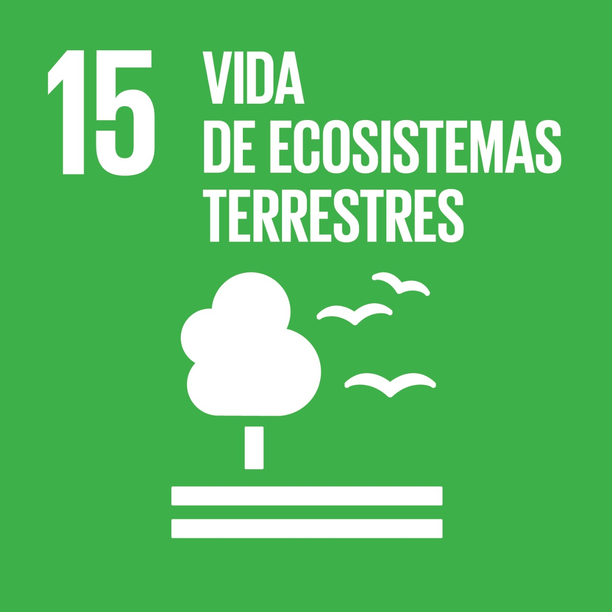

PROYECTO SELECCIONADO

VIDA DE ECOSISTEMAS TERRESTRES
Propuesta:Los incendios forestales son una de las principales amenazas ambientales en Argentina. Cada año, estos incendios causan miles de hectáreas de bosques arrasados, la pérdida de biodiversidad y la contaminación del aire. Para lo que buscamos crear un sitio web para concientizar a la población sobre la importancia de la prevención de incendios.
Puntos importandes:
- Brindar en un mapa actualizado en tiempo real con los focos de incendios activos.
- Mostar el impacto de los incendios en Argentina.
- Informar sobre las causas más comunes y las medidas que se pueden tomar para prevenirlos